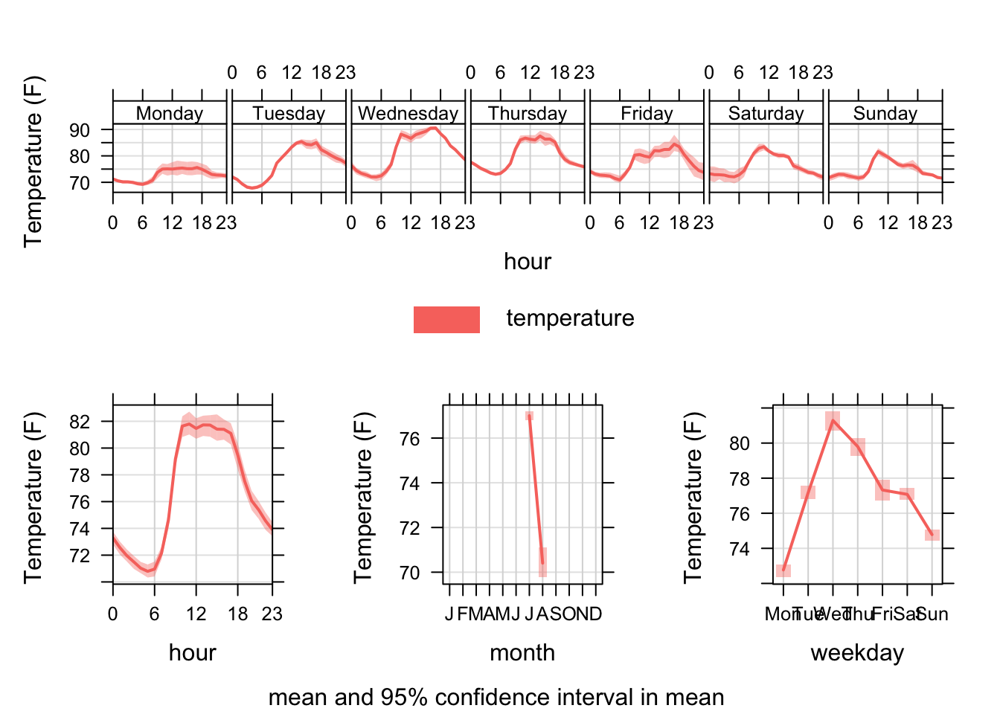

Project: Hot Summer
Project Introduction and Context
This project explores weather collected in Reggie Wong Park in Boston on in July and August of 2023. Through this analysis, I aim to uncover patterns, trends and relationships between:
- Outdoors Temperature
And other environmental metrics:
- Relative Humidity
- and other weather conditions…
Methodology: End to End Data Pipelines & Time Series Analysis for Predicting Weather
The Kestrel sensor collects weather data at every 10-min interval. Working with this raw data, I applied end to end data pipelines to QC the dataset and applied time series analysis to understand how different independent variables (features) such as outdoor temperature, and humidity influence that weather conditions.
Applications
Time Series Analysis can be applied to analyze any type of trend that changes across time:
- Healthcare: Patient Admissions, Disease Prevalence, Drug Effectiveness
- Retail: Sales data, Customer Traffic, Inventory Management
- Finance: Stock Market Prices, Interest Rates, Cryptocurrency Trends
- Manufacturing: Production Output, Supply Chain
and so much more…
Dataset Source
The data used in this project were sourced from Kestrel Sensors located at Reggie Wong Park on Aug 2, 2023. Please email me for more information about this dataset.
Programming Languages used
- R (tidyverse, dplyr, ggplot2, plotly, lubridate, openair)
- Version Control: Git
Loaded and QC the dataset
kestrel_df <- read_xlsx("./data/Reggie_Kestrel_08022023.xlsx", sheet=1, range = "A5:G6228") %>%
janitor::clean_names() %>%
slice(-1) %>%
mutate(temperature = as.numeric(temperature),
wet_bulb_temp = as.numeric(wet_bulb_temp),
relative_humidity = as.numeric(relative_humidity),
station_pressure = as.numeric(station_pressure),
heat_index = as.numeric(heat_index),
dew_point = as.numeric(dew_point)) %>%
rename(date = formatted_date_time)
head(kestrel_df)## # A tibble: 6 × 7
## date temperature wet_bulb_temp relative_humidity station_pressure heat_index
## <chr> <dbl> <dbl> <dbl> <dbl> <dbl>
## 1 2023-… 72.3 70.2 90 29.8 74.5
## 2 2023-… 72.6 70.5 90.2 29.8 74.8
## 3 2023-… 72.4 70.3 90.2 29.8 74.7
## 4 2023-… 72.6 70.5 90.3 29.8 74.8
## 5 2023-… 72.4 70.3 90.3 29.8 74.7
## 6 2023-… 72.4 70.3 90.5 29.8 74.7
## # ℹ 1 more variable: dew_point <dbl>Methodology Explanation
I created a dataset kestrel_df for the Kestrel sensor by loading the relevant excel sheet, tidying the column names and removing irrelevant columns. I also explored the different variables and changed metrics from character to numeric variables. I also changed the name of the date variable to make it easier to use the lubridate packages later on.
Data Summary
The dataframe kestrel_df consists of 7 variables and 6222 observations.
The dataframe presents data pertaining to various environmental metrics, including heat metrics (temperature, wet bulb temperature, heat index), and more, obtained from the Kestrel sensor during the period spanning from 07/08/2023 at 8:02 PM to 08/02/2023 at 3:30 PM. Initially, the data points were recorded at 2-minute intervals until 07/12/2023, 7:30 PM, at which point the recording frequency transitioned to 10-minute intervals.
Time Series Analysis
# Date to year, month, day and hour
kestrel_df$date <- ymd_hms(kestrel_df$date)
kestrel_df$year <- year(kestrel_df$date)
kestrel_df$month <- month(kestrel_df$date)
kestrel_df$day <- day(kestrel_df$date)
kestrel_df$hour <- hour(kestrel_df$date)
kestrel_df %>%
select(date, year, month, day, hour)## # A tibble: 6,222 × 5
## date year month day hour
## <dttm> <dbl> <dbl> <int> <int>
## 1 2023-07-08 20:12:00 2023 7 8 20
## 2 2023-07-08 20:14:00 2023 7 8 20
## 3 2023-07-08 20:16:00 2023 7 8 20
## 4 2023-07-08 20:18:00 2023 7 8 20
## 5 2023-07-08 20:20:00 2023 7 8 20
## 6 2023-07-08 20:22:00 2023 7 8 20
## 7 2023-07-08 20:24:00 2023 7 8 20
## 8 2023-07-08 20:26:00 2023 7 8 20
## 9 2023-07-08 20:28:00 2023 7 8 20
## 10 2023-07-08 20:30:00 2023 7 8 20
## # ℹ 6,212 more rows# Converted to 10 minute intervals
kestrel_df$date <- floor_date(kestrel_df$date, unit = "10 minutes")
head(kestrel_df)## # A tibble: 6 × 11
## date temperature wet_bulb_temp relative_humidity
## <dttm> <dbl> <dbl> <dbl>
## 1 2023-07-08 20:10:00 72.3 70.2 90
## 2 2023-07-08 20:10:00 72.6 70.5 90.2
## 3 2023-07-08 20:10:00 72.4 70.3 90.2
## 4 2023-07-08 20:10:00 72.6 70.5 90.3
## 5 2023-07-08 20:20:00 72.4 70.3 90.3
## 6 2023-07-08 20:20:00 72.4 70.3 90.5
## # ℹ 7 more variables: station_pressure <dbl>, heat_index <dbl>,
## # dew_point <dbl>, year <dbl>, month <dbl>, day <int>, hour <int># Converted to 1-month intervals
kestrel_df$date <- floor_date(kestrel_df$date, unit = "10 minutes")
head(kestrel_df)## # A tibble: 6 × 11
## date temperature wet_bulb_temp relative_humidity
## <dttm> <dbl> <dbl> <dbl>
## 1 2023-07-08 20:10:00 72.3 70.2 90
## 2 2023-07-08 20:10:00 72.6 70.5 90.2
## 3 2023-07-08 20:10:00 72.4 70.3 90.2
## 4 2023-07-08 20:10:00 72.6 70.5 90.3
## 5 2023-07-08 20:20:00 72.4 70.3 90.3
## 6 2023-07-08 20:20:00 72.4 70.3 90.5
## # ℹ 7 more variables: station_pressure <dbl>, heat_index <dbl>,
## # dew_point <dbl>, year <dbl>, month <dbl>, day <int>, hour <int># Converted to 1-day intervals
kestrel_daily_df <- timeAverage(kestrel_df, avg.time = "day")
head(kestrel_daily_df)## # A tibble: 6 × 11
## date temperature wet_bulb_temp relative_humidity
## <dttm> <dbl> <dbl> <dbl>
## 1 2023-07-08 00:00:00 77.2 70.9 75.1
## 2 2023-07-09 00:00:00 74.5 70.3 82.5
## 3 2023-07-10 00:00:00 69.1 69.0 99.3
## 4 2023-07-11 00:00:00 78.3 69.1 67.5
## 5 2023-07-12 00:00:00 84.1 70.3 53.9
## 6 2023-07-13 00:00:00 82.2 70.8 58.9
## # ℹ 7 more variables: station_pressure <dbl>, heat_index <dbl>,
## # dew_point <dbl>, year <dbl>, month <dbl>, day <dbl>, hour <dbl># Converted to monthly intervals
kestrel_monthly_df <- timeAverage(kestrel_df, avg.time = "month")
head(kestrel_monthly_df)## # A tibble: 2 × 11
## date temperature wet_bulb_temp relative_humidity
## <dttm> <dbl> <dbl> <dbl>
## 1 2023-07-01 00:00:00 77.0 69.6 72.9
## 2 2023-08-01 00:00:00 70.4 57.6 47.5
## # ℹ 7 more variables: station_pressure <dbl>, heat_index <dbl>,
## # dew_point <dbl>, year <dbl>, month <dbl>, day <dbl>, hour <dbl>Data Methodology
- I separated the date column into year, month, day and hour.
- I found the average 10-min values for temperature, humidity…
- I found the average daily values for temperature, humidity…
- I found the average monthly values for temperature, humidity…
Note: There was only data recorded for 08/01/2023 and 08/02/2023 in August.
Trends in temperature, WBGT and heat index
Comparing July and August temperatures
kestrel_temp <- plot_ly(kestrel_daily_df,
x = ~date,
y = ~temperature,
name = 'Daily Average Temperature (°F)',
type = 'scatter',
mode = 'lines+markers') %>%
layout(
title = 'Daily Temperature at Reggie Wong Park in July-Aug 2023',
yaxis = list(title = 'Temperature (°F)'),
xaxis = list(title = 'Date'),
legend = list(
orientation = 'h',
y = -0.3,
x = 0.5,
xanchor = 'center',
yanchor = 'bottom'
)
)
# View the plot
kestrel_tempFindings * July 2023 had higher temperatures, and we have more data!
Let’s focus on July 2023.
Weather conditions across time in July 2023
timePlot(selectByDate(kestrel_df, year = 2023, month = 7),
pollutant = c("temperature", "relative_humidity"),
y.relation = "free")
Data Methodology
I created a time series plot that depicts the variations in temperature and humidity from July 8, 2023, at 8:02 PM to July 31, 2023, at 11:50 PM.
Findings
- July 13 and July 24 had the highest temperatures, close to 100 degrees Fahrenheit!!!
- Outdoor temperature is linked to lower humidity across July 2023.
Weather Conditions across days of the week
# temperature
timeVariation(subset(kestrel_df),pollutant = "temperature", ylab = "Temperature (F)")
# Relative Humidity
timeVariation(subset(kestrel_df),pollutant = "relative_humidity", ylab = "Relative Humidity")Data Methodology
I created a time series plot that depicts the variations in temperature and humidity across different days of the week in July 2023.
Findings
- MONDAY had the highest humidity, lowest temperature
- WEDNESDAY had the highest temperature, lowest humidity
Data Summary and Recommendations for park users
Based on the data from July-Aug 2023:
- July is a hot month, with temperatures approaching 100 degrees fahrenheit at certain times.
- Temperatures may fluctuate across July, and start cooling off towards the end of the month.
- Wednesdays bring the highest temperatures and lowest humidity, so users should take extra precautions when exercising in the park to avoid heat-related issues.